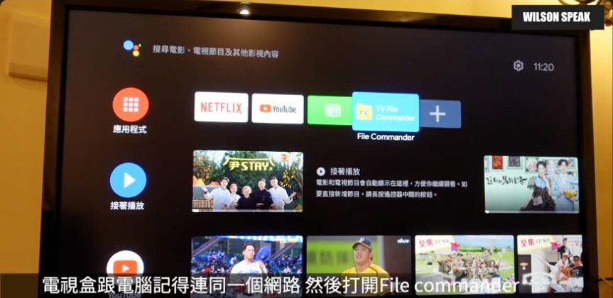

小米盒子 S 怎麼用？安裝 APK 前先弄懂這幾件事

原片發布 2021-11-05 · 頻道累積觀看第 4 名（2026.11.13 查核）· 點封面看原片。
想在小米盒子上裝一個商店裡沒有的 App，才發現手機上熟悉的操作，到了電視就卡關。APK 只是 Android 的安裝套件，能不能安裝、能不能順利用遙控器操作，以及能不能播放內容，是三件不同的事。
這篇回顧的是 2021 年介紹的 Mi Box S，不是後來每一代 Xiaomi TV Box S 的通用操作手冊。選單、App 和支援情況會隨版本改變，下面保留安裝與排查的思路，實際介面請對照你手上的版本。
電視盒補的是功能，先想你要看什麼
先看看電視目前少了什麼：沒有想用的官方串流 App、舊智慧介面反應慢，或想把本地檔案放到大螢幕看。電視盒可以補上一套使用介面和播放環境，但不會替你取得付費服務的訂閱，也不能保證每種格式都播放順暢。
選擇設備時，把你常看的服務列成清單，分別確認該型號是否在服務支援範圍內，以及帳戶方案、電視和連線是否符合需求。不要把 Android TV、Google TV 或某一項認證，直接當成所有串流服務與畫質的通行證。
App 能安裝，不一定能用遙控器順利操作
手機 App 常靠手指點選和滑動，電視卻主要靠方向鍵與確認鍵。即使 APK 安裝成功，也可能遇到按不到登入按鈕、文字太小，或畫面方向不對。若開發者提供 TV 版，先使用那個版本通常更省事。
片中的 TV-Apps Drawer 是當時用來尋找、啟動部分已安裝 App 的工具示例。這類啟動工具可以幫你找到圖示，但不能把手機介面自動改成適合遙控器，也不會補上缺少的串流授權或硬體解碼能力。別把能開啟和完整相容混在一起。
APK 能安裝，不代表遙控器操作、串流授權與播放能力都符合需求。
先找內建商店，再考慮 APK
先在盒子內建商店搜尋官方 App，也看看開發者是否有電視版說明。商店中找不到，可能和地區、系統版本或裝置支援有關，並不代表下載一個同名 APK 就一定能解決。先確認原因，常常能少走一段冤枉路。
真的需要手動安裝時，選開發者正式提供的檔案與說明。把帳密輸入來路不明的修改版，會帶來額外風險；裝了 APK 也不會自動獲得原本沒有的訂閱或播放權限。如果官方已不支援這個裝置，尋找受支援的替代方式比較實際。
真的需要手動安裝，照這個順序確認
小米官方列出的方式包括從內建商店下載，或將 APK 放進 USB 儲存裝置，再透過適用的檔案管理工具開啟。舊片另外示範 File Commander 的電腦傳檔方式；那是當時的工具功能，不代表每台盒子原本就內建，也不能保證現在版本選單相同。
若使用區網傳檔，讓電腦與盒子處於你信任的同一個本地網路，依工具當下顯示的位址操作。遇到安裝未知 App 的權限提示，先確認正在授權的是哪個安裝工具；只在必要範圍開啟，安裝完成後關閉傳檔服務，並撤回不再需要的安裝權限。
- 確認 APK 來自官方，並支援盒子的系統與裝置類型。
- 以 USB 或目前仍受支援的本地傳檔工具，把檔案送到盒子。
- 從檔案工具開啟，檢查權限與安裝結果。
- 啟動並測試遙控器操作，最後關閉臨時使用的傳檔與安裝權限。

裝好了卻卡住，先分清楚是哪裡卡
如果安裝失敗，先看錯誤是檔案無法讀取、儲存空間不足，還是套件與系統不相容。可檢查官方支援版本、檔案是否下載完整，以及盒子剩餘空間。不要一看到失敗，就把不認識的權限全部打開。
如果已經能開啟卻播放卡頓，再比較不同影片與不同官方 App，並檢查所在位置的 Wi-Fi 品質。選哪個頻段要看現場連線，不是一律切 5 GHz 就好。需要有線時，也要核對特定 USB 網卡與系統的相容性，不能看到接頭能插就當成保證。
- 先分辨是安裝失敗、啟動失敗，還是播放時才卡。
- 比對官方支援資訊與盒子的系統版本。
- 用另一個已知正常的 App 測試，縮小問題範圍。
老盒子要不要換？從實際困擾開始看
舊設備開 App 越來越慢，先看是否只是儲存空間快滿、某個 App 異常，或網路不穩。先移除不用的 App，依官方方式處理更新與快取，再用原本常看的內容比較，會比立刻重設所有資料更容易判斷。
若常用服務已不再支援，或你需要的功能超出設備能力，再考慮換機。把服務支援、操作速度、連接方式與維護情況一起列出來，避免為了裝一個 APK 買了另一台同樣不合用的盒子。舊片能幫你理解使用情境，現行相容性仍要另外確認。
你可能還想問
裝 APK 後找不到圖示，就代表安裝失敗嗎？
不一定。有些 App 沒有提供電視首頁使用的啟動方式，可先到設定中的 App 清單確認。額外啟動工具只能協助開啟，不能保證操作相容。
同名的手機 App，可以當成電視版使用嗎？
不一定。先查開發者是否支援 Android TV 或你的裝置，登入、方向鍵與播放能力都要測，不要只看安裝成功。
裝完 APK 就能取得更高畫質或免費訂閱嗎？
不能。畫質與播放權限仍受服務、帳戶方案、裝置支援及整條影音鏈路影響，安裝檔本身不會改變這些條件。
影片與參考資料
原片發布：2021-11-05。文章整理：2026-11-14。這是影片主題的延伸閱讀，已對照公開字幕、說明與下列官方資料校訂；實際介面與支援條件依型號、版本確認。